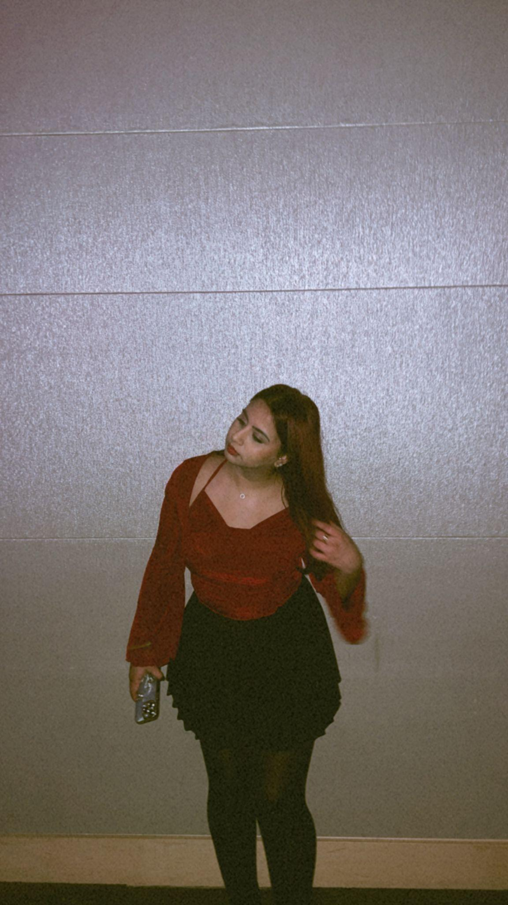
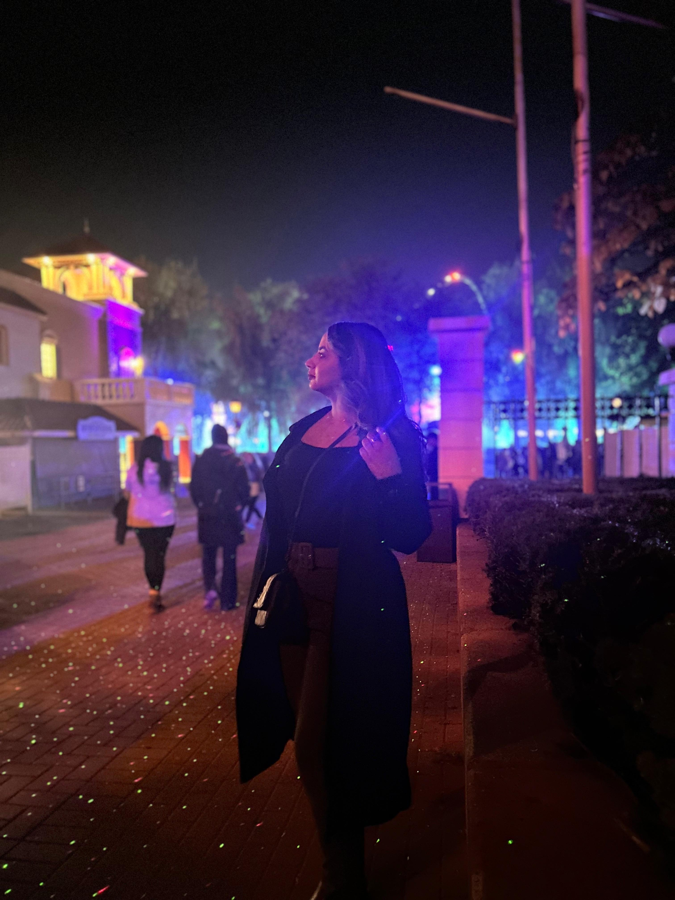
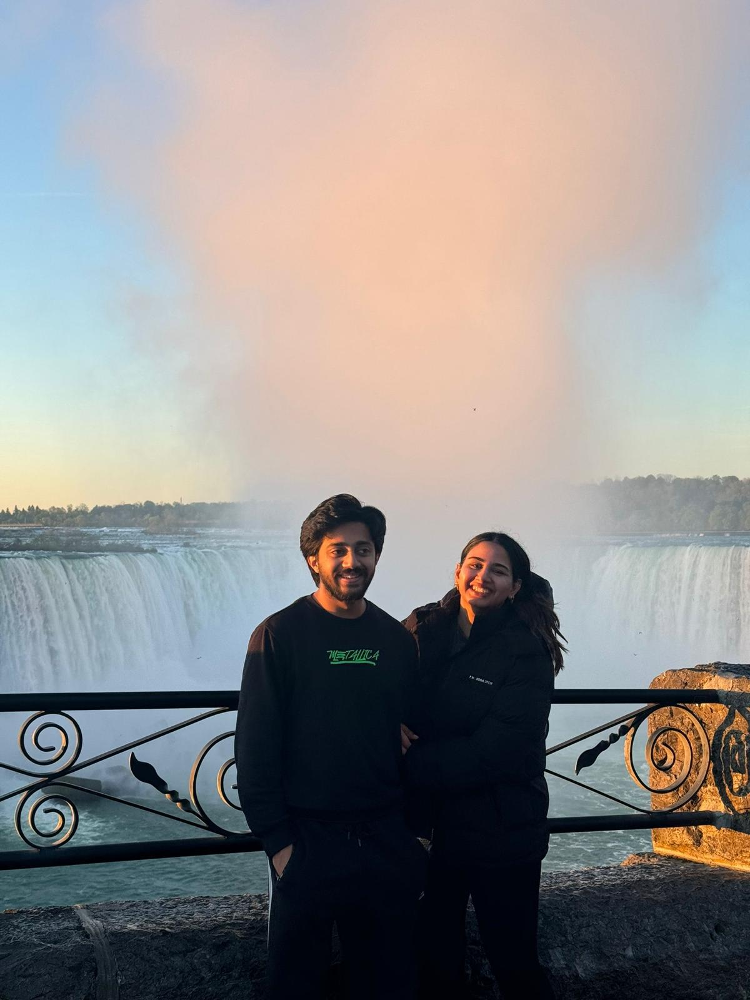
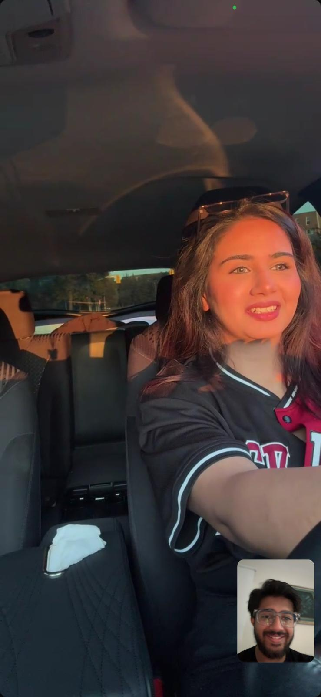
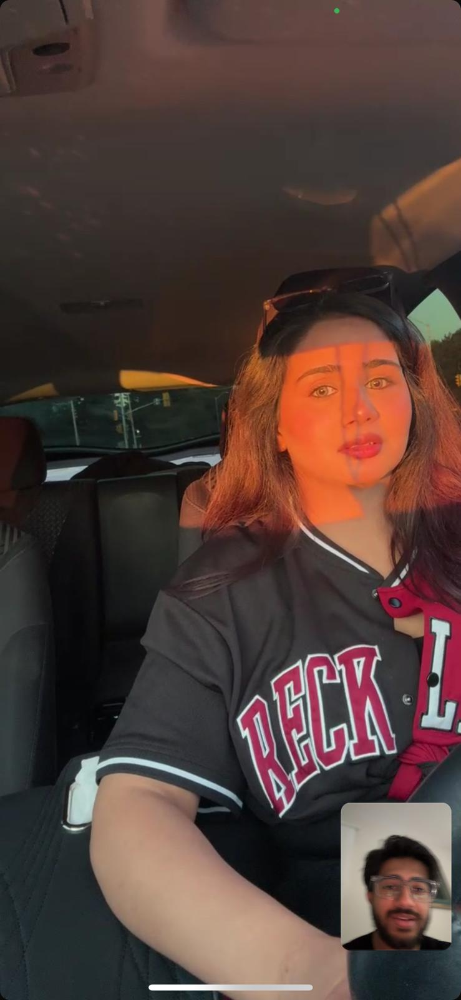
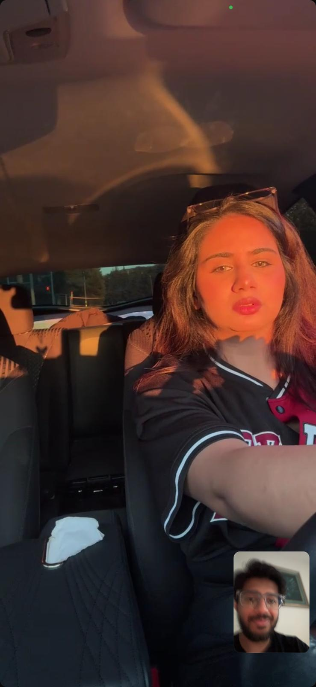

Hey Ifrah,
The last time we met, I had a lot of stuff in my heart. I had a lot to say, but I couldn't. Partly because of my fault, sure, but mainly because of the circumstances.
Before we left, I agreed to not make contact until you text me first to share how you feel. When I got home, I realized I couldn't really say much, even more so after I texted you later that night; which you read 5 days later.
While I whole-heartedly wished for a positive response from you, part of me wanted you not read it until I could do this. I just wanted to be able to do this before you text me back and tell me you're still not convinced.
But my fear turned into confusion when you never reached back out. I don't know what happened but I hope it turns out to be something good, something comforting. Hope is all I have, hope is all I've had for months, for well over a year in fact.
...
About this tiny, little gift. It isn't to buy your apology. You see I am an overthinker. I don't believe in building relationships on material things. Not even with you, despite all the trust I have in you and knowing you're not materialistic. I'm very strong on that. At first I thought gifting you something to get out of this would be very bad, for us, and for everything between us.
But this idea occurred to me the day after we met in college. I realized that this specific small, little gift, coming from me, in these circumstances, would mean something different. It wouldn't mean that this is all it takes, and it wouldn't mean that when it comes to effort this is all I can do. It's to show you I care about you and what you like.
Par phir bhi, agar mei kamyaab hojaaun, to mei kiya sochunga baad mei ke iss gift se theek hua sab?
Then... I recalled how your eyes got wet the last time. You say you don't care and I've been hearing that for a long time now, I'm used to it.
Yet I saw the way you were sitting with me at Scarborough Bluffs. You looked like the same angel I've always wanted to hold in my arms, pick up, hide within myself and protect, love, and caress for the rest of my life.
(Ignore me pls)
Phir mujhe samajh aayi ke I have to do this.
Because now...
Now you might believe me when I tell you what I've told you before: my only way of knowing what to give you is to see you like or dislike something.
Cheezon ke mutalliq mere opinions aap se form hotey hain. You have taught me this stuff, and I try my best to learn all the time. Perhaps now you'll believe me when I say I genuinely fail to comprehend what something is worth, how much you like it, and if it would be fitting for the occasion.
Maybe now you'll trust me when I say "I have no idea" how good something looks. You might say a $20, $200, and a $2,000 diamond/jewelry item looks good. But I have no way of knowing "how" good it looks. Like idk what if I buy a $500 bracelet but it doesn't look as good to you as a $500 bracelet should. Maybe it only looks as good as a $150 bracelet. Do you get the point? Do you know what I mean? This is why I've tried to put my humble effort in other things more, that require more of my own indulgement and love. The little things.
Having observed you for so long, I'm pretty sure I'm at a point now where I can comfortably decide what to get as a gift for other people in my life, thanks to you. But when it comes to you, I have genuinely always wanted to give you the world, that's my life-long dream. So when it comes to the tiny little things, I try and do what I can, but I simply cannot wrap my head around what you would and wouldn't like.
But I try. I do. Which is why it hurt when you said all that over the phone when I was in Bahawalpur because I thought you meant I was miserly (kanjoos, lol). When I tried to convince you later, it got even worse. I wasn't trying to say "Hey, look, I spend so much on you/us." No, God, no. I just wanted to remind you that when I did sort of "gift" you those tiny little things, I did that because you had selected them, so you obviously liked them. I couldn't have done that.
On top of that, those were items I've been wishing to see you in for a long, long, long time. So it was PERFECT. That's why I paid for it. It wasn't much, it was barely anything. But I would've felt something different when I would see you in that knowing I got you this.
That's all I wanted to say, but it went the wrong way. Sorry about that.
I mean look at yourself in this red top and skirt:

How could I resist the urge to see you in this?
...
About the convocation, I agree I was late. To be honest, I might have even forgotten for a bit. But I assure you, I was very, very happy for you in that moment. It was one of those hundreds of thousands of moments where I would have loved for you to come running to me and give me a tight hug with your red robe on, and a degree in your hand.
In very simple words, it just didn't feel right to wish you earlier when you got there. Aap hain, sarr se to nahi utaarunga na.
To be honest, I wholeheartedly meant it when I asked you out on a date in that dress. You know how much I love seeing you in dresses. Don't believe me? Check this out.


Now about the convocation, look at yourself.
WOW!!!
Uss ke baad, mei apko naraaz hone pe nahi daant raha tha. I just wanted to make sure ke meri iss khachh maarney se agar aap ka dil dukha hai to aap uss ko bhulaa ke apna din behtareen guzaarein. It was your day and I didn't want to ruin it. I wanted to keep the explanations and apologies for later. The intention was ke aap ko pata ho what happened and that I'm sorry but I'll explain again when you have time. Mei nahi chaahta tha uss din jab bhi phone kholein wohi cheez yaad aaye, or saamney heavy messages baras rahey hon, lol.
Sorry yaar...
...
Anginnat martaba wohi pictures, videos, snaps repeat pe dekh chuka hun. Hafton se, mahenoon se, dekh raha hun. Kuch dekhtey hue to saal se zyaada hogya. Bohot yaad aa rahi hain. And this took so long to arrange, shoes bohot deir se aaye hain. Har zamaaney ki memories mei gumm rehta hun.
Yeh pictures to wo hain jo mere phone ki memories mei aaye din aankhon ke saamney rehti hain. You looked majestic in that dress you wore to Wonderland.
You always do.


My precious memories...
Yeah, you did win at bowling that day. Rare loss for me. I'll get you back soon.
I'm not perfect, Ifrah. Never was, and certainly never will be. What I can promise you is my undying persistence to be the best version of myself for you.
I remember what you've done for me. What I was when we first met, and how you helped me stand back up. You were there for me since before our relationship ever started. You helped me grow mentally.
People have come into my life and left, I'm not saying it was the easiest thing in the world but I am capable of that. However, when it comes to you, I refuse to give up in the face of the world.
You are the one person I just cannot and will not lose. Which is why I have been the way I have been all this time. I've irritated, bothered, upset, annoyed, and frustrated you at times, but it was always worth it when I am finally able to explain everything, apologize, and see that pretty smile on your face.
But I can't see you hate me. So this seemed like the best way to reach out while making sure I was able to say everything I want.
I meant every word I ever said. I made solid commitments to you and to myself many times over these years. I just can NEVER forget the night of Feb 14th, 2023. The most beautiful being in the world sitting on my lap, a few tears escaping here perfectly carved eyes, rolling down her gorgeous face, while she says something along the lines of "I'm happy you're in my life. Thank you for being here." My heart cracked open that day, you ventured in, and closed it from within. You became permanent that day. One of many times, before and since.
Everyone deserves one person in their lives that will never give up on them, never accept to lose them. I will be that person for you, now and forever. I will never be okay with losing you. I can't give up on you, and I never will.
You are the greatest thing to have ever happened to me. There isn't a future I foresee without you in the main frame.
Life is very short. I won't lose you to these things. I know they're not tiny for you, but they are tiny when it comes to losing you over them. Nothing is big enough. Because I simply refuse to lose you.
You are an angel to me. I see you as a baby to caress, as a butterfly to protect, as an aurora to admire.



No one could ever get what I feel in this video:
I could never hurt you on purpose, but I definitely do make mistakes. Lots of them.
I lose sleep every morning when I wake up and realize you were a dream. I try and go back to sleep, so I can see you and be with you again but by that time the heartache has already kicked in.
I eagerly check my phone, hoping to wake up to a text or a call from you. It gets worse. Then I spend the day checking you stories, thinking about you, missing you like hell. Keeps getting worse and worse. I imagine you in various scenarios and doze off with a heavy heart. I dream of you again if I'm lucky.
And it goes on... and on... and on...
I look for your license plate in every white Prius...
I miss the way you used to bite me. I miss everything.
...
This is the best thing I've ever made. It's not the best thing ever made in the world FOR SURE, and it's definitely not the best thing anyone has ever given someone.
It's not the best thing I'll ever give you and it's probably not the best thing you've ever seen either.
But I gave it my absolute best, I really did. I made it with all my heart. Everything I could think of, I put into it.
I've put everything I had into US, and I've given every last ounce of myself and all I have into this box you have infront of you.
I hope I succeeded, and in that hope I will be at Polson Pier tomorrow night (Sunday), Oct 6th, 2025, from 10:30 PM - 12:30 AM.
Or agar abhi bhi koi gila shikwa ya gussa baaki ho, to aa ke utaar lein or mujhe mera sakoon lauta dein. Hit me slap me kick me punch me. Apni bharaas nikaalein or mere galey lagg ke mujhe mera sakoon lauta dein.
Intezaar rahega...
- N. M.